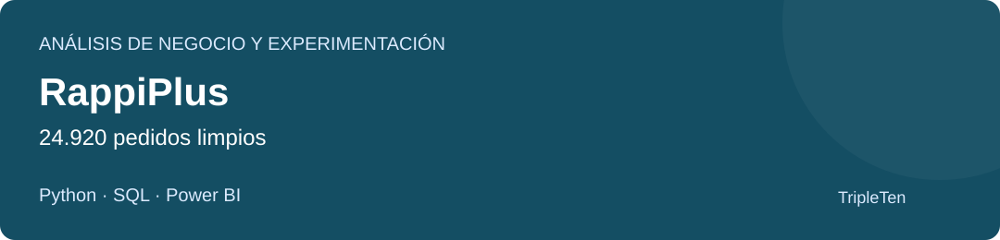

RappiPlus
¿Qué muestran los costes, la conversión y la retención, y hay evidencia para cambiar el checkout?
El A/B no demuestra una mejora de conversión (p = 0,4161). El resultado económico considera productos y marketing, no todos los gastos del negocio.
Datos y proceso
Datos. Pedidos de enero a junio de 2025, catálogo, marketing, tablas SQL y un A/B con 10.000 usuarios.
Análisis. Limpieza e integración con Python, consultas SQL, indicadores económicos y prueba de dos proporciones.
Entrega. Notebook, siete consultas SQL, tres CSV e informe Power BI de cuatro páginas.